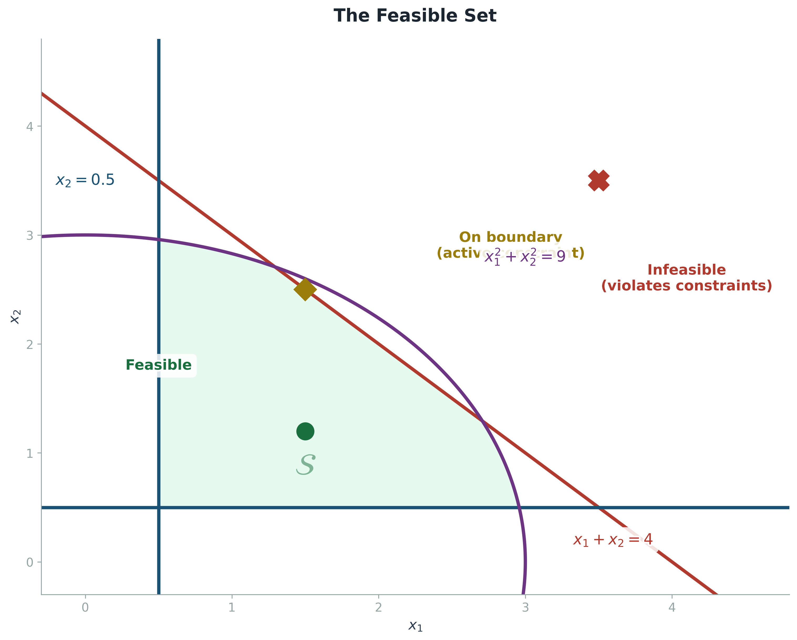
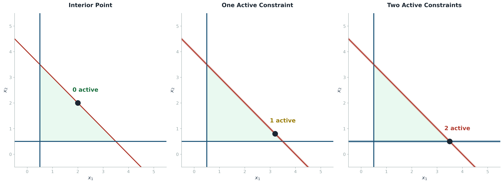
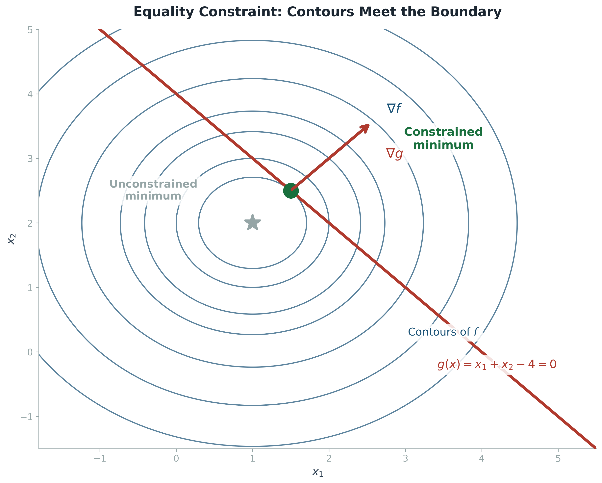
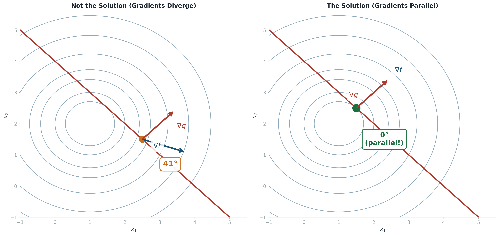
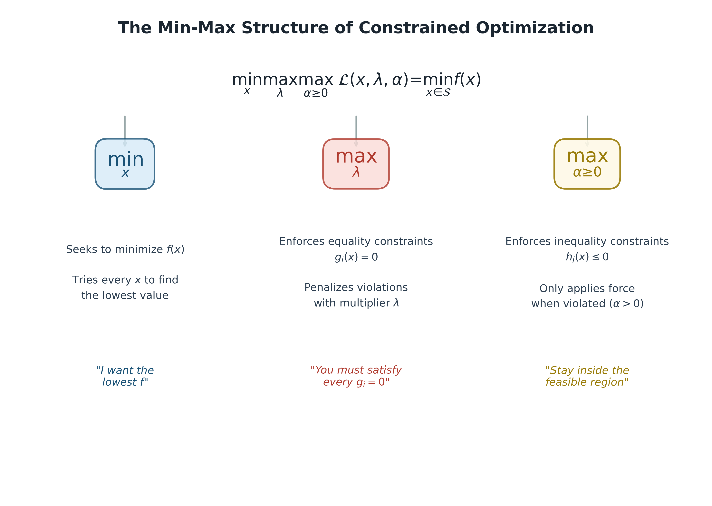
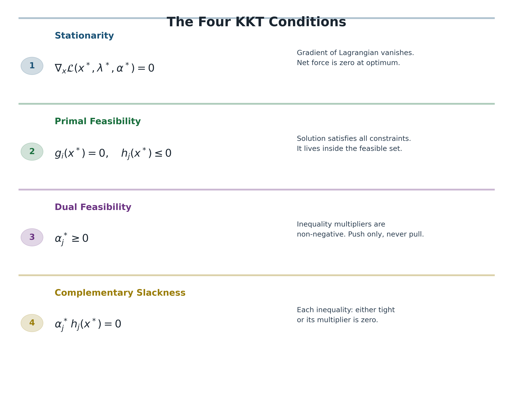
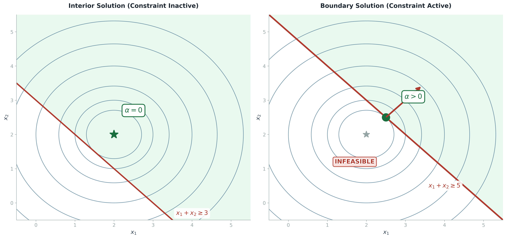
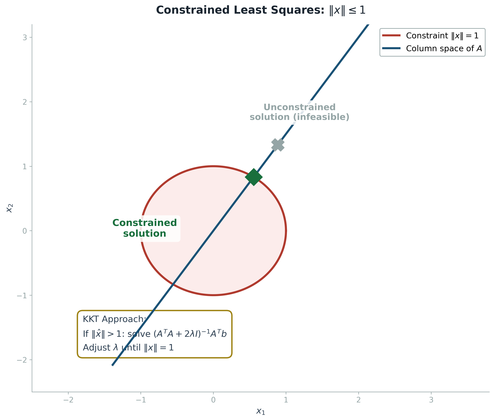
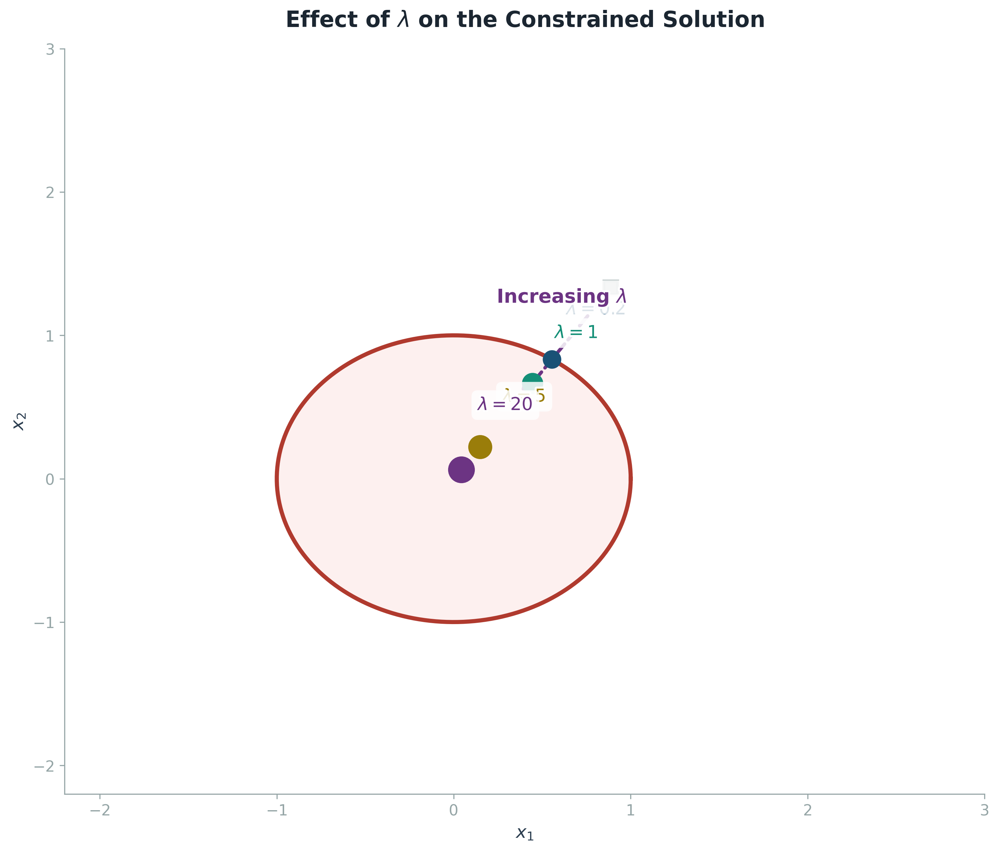
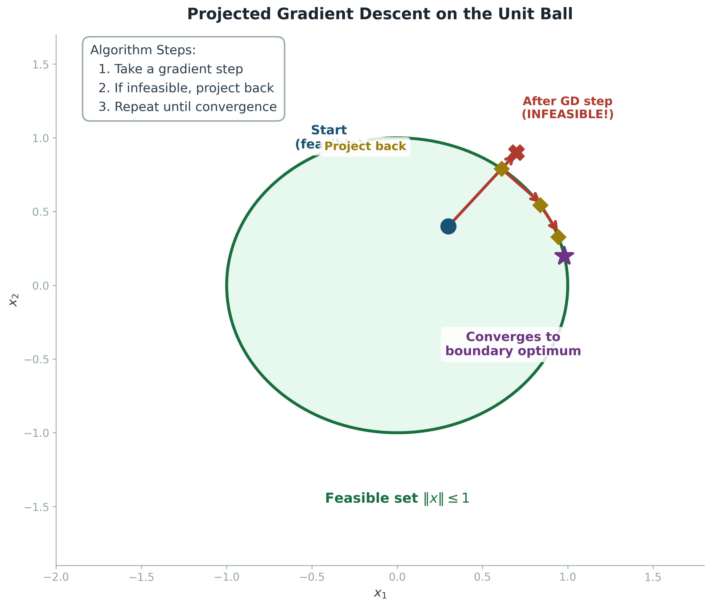

When Freedom Has Limits: Why Constraints Matter
In every blog so far, we have given our optimizer complete freedom. The gradient descent algorithm could step in any direction it pleased. Newton's method could jump to any point in the entire input space. The implicit assumption was that the loss landscape was the whole world, and the optimizer was free to explore every corner of it. This assumption is almost always wrong. In practice, nearly every interesting optimization problem comes with constraints, rules that restrict where the solution is allowed to live.
A portfolio manager cannot allocate negative money to a stock (no short selling), and must invest exactly 100% of the available capital (the weights must sum to one). A neural network trained with weight clipping cannot have parameters exceeding a certain magnitude. A support vector machine must find a hyperplane that correctly classifies all training examples, not just most of them. A path-planning algorithm for a robot must produce trajectories that respect the physical limits of joint angles and motor torques. In all of these cases, the optimizer must navigate within a restricted region of the input space, and the best unconstrained solution may be completely infeasible.
The general constrained optimization problem asks us to minimize an objective function $f(x)$ subject to two kinds of restrictions. Equality constraints $g_i(x) = 0$ force certain conditions to hold exactly, like requiring that the portfolio weights sum to one. Inequality constraints $h_j(x) \leq 0$ define one-sided walls, like requiring that every weight is non-negative. Together, these constraints carve out a region of the input space called the feasible set, and our solution must live inside it. The unconstrained optimization we have studied so far is the special case where the feasible set is all of $\mathbb{R}^n$. The constrained case is the general case, and it is far richer.

Figure 1: The feasible set $\mathcal{S}$ (green) is the intersection of all constraint regions. Points inside are feasible; points outside violate at least one constraint.
The Feasible Set and the Active Set
The feasible set $\mathcal{S}$ is the set of all points that satisfy every constraint simultaneously. It is the intersection of the solution sets of all the individual constraints. If even one constraint is violated, the point is infeasible, no matter how well it satisfies the others. This is what makes constrained optimization fundamentally harder than unconstrained optimization: you cannot simply follow the gradient downhill, because the downhill direction might lead you straight into a wall. You need a more sophisticated strategy that respects the walls while still making progress toward the minimum.
A crucial concept is the active set. At any given point $x$ in or near the feasible set, some constraints are active, meaning the point sits exactly on the constraint boundary (for an equality constraint, this is always true; for an inequality constraint, it means $h_j(x) = 0$ exactly). Other constraints are inactive, meaning the point lies strictly in the interior of their feasible region ($h_j(x) < 0$). The active set tells you which constraints are actually exerting force on the solution at that point. Inactive constraints are like walls that are far away: they restrict the global shape of the feasible set, but they do not affect the local geometry of the solution. Active constraints are the walls you are actually touching, and they dominate the local behavior of the optimizer.

Figure 2: The active set depends on where you stand. At an interior point, no constraints are active. On an edge, one is active. At a corner, two or more may be active simultaneously.
This distinction is the key to computational efficiency in constrained optimization. If you know which constraints are active at the solution (and for many problems, you can make a good guess), you can temporarily treat the active inequality constraints as equality constraints and apply the methods we will develop shortly, completely ignoring the inactive ones. This is the principle behind active set methods, which were the workhorse of constrained optimization for decades and remain competitive for small-to-medium-scale problems. The active set is the bridge between unconstrained and constrained optimization: it tells you which walls matter, and which ones you can ignore.
The Lagrangian: Turning Walls into Forces
How do we solve a constrained optimization problem? The most elegant approach is to transform it into an unconstrained one by incorporating the constraints into the objective function itself. This is the idea behind the Lagrangian, named after Joseph-Louis Lagrange, who developed it in the late 18th century. The Lagrangian is not just a mathematical trick; it has a deep physical interpretation. In mechanics, constraints correspond to physical barriers (a bead on a wire, a pendulum of fixed length), and the Lagrange multipliers correspond to the forces that the barriers exert on the system to keep it on the constraint surface. In optimization, the same idea applies: the Lagrange multipliers measure how hard each constraint is pushing on the solution.
For the simplest case of a single equality constraint $g(x) = 0$, the Lagrangian is defined as $L(x, \lambda) = f(x) + \lambda g(x)$. The multiplier $\lambda$ is a scalar that the optimizer chooses alongside $x$. If $\lambda$ is positive, it adds a penalty when $g(x)$ deviates from zero, effectively pulling the solution toward the constraint surface. If $\lambda$ is negative, it pushes in the opposite direction. The magic is that at the optimal solution, the gradient of $f$ and the gradient of $g$ must point in exactly the same direction (or exactly opposite directions). This is because if they did not, you could slide along the constraint surface in a direction that decreases $f$, contradicting optimality. The gradient of $f$ must be parallel to the gradient of the constraint. This is the geometric intuition behind the entire theory.

Figure 3: At the constrained minimum, the contour line of $f$ is tangent to the constraint curve $g(x) = 0$. This tangency means the gradients are parallel.
The Geometric Key: Parallel Gradients
Let us make the geometric argument precise, because it is the single most important insight in all of constrained optimization. Consider a point $x$ that lies on the constraint surface $g(x) = 0$ and is a local minimum of $f$ subject to this constraint. Now imagine taking a small step along the constraint surface. Because we stay on the surface, the constraint is still satisfied. But does $f$ increase or decrease? If $f$ decreases in any direction along the surface, then $x$ cannot be the constrained minimum, because we could improve by taking that step. Therefore, at the true constrained minimum, every direction tangent to the constraint surface must be a direction of no first-order change in $f$. The directional derivative of $f$ along any tangent vector $v$ must be zero.
What does this imply about the gradients? The directional derivative of $f$ along $v$ is the dot product of the gradient of $f$ with $v$. For this to be zero for every tangent vector $v$, the gradient of $f$ must be perpendicular to the entire tangent plane. But the gradient of $g$ is also perpendicular to the tangent plane (it is, by definition, the direction of steepest ascent of $g$, which points directly away from the level set). Therefore, both gradients must point in the same direction (or exactly opposite), which means they must be scalar multiples of each other. This is the condition that defines the constrained optimum: the gradient of the objective is parallel to the gradient of the constraint. The Lagrange multiplier $\lambda$ is simply the proportionality constant.

Figure 4: Left: at a non-optimal point on the constraint, the gradients are not parallel. Right: at the optimal point, they are perfectly aligned.
The Generalized Lagrangian: Equality and Inequality Together
The full constrained optimization problem may have both equality constraints $g_i(x) = 0$ and inequality constraints $h_j(x) \leq 0$. The generalized Lagrangian combines everything into a single scalar function. For each equality constraint $g_i$, we introduce a Lagrange multiplier $\lambda_i$ (which can be any real number, positive or negative). For each inequality constraint $h_j$, we introduce a multiplier $\alpha_j$, but with a crucial restriction: $\alpha_j$ must be non-negative. This asymmetry between $\lambda$ (free) and $\alpha$ (non-negative) is the defining feature of the KKT conditions and reflects the one-sided nature of inequality constraints.
The generalized Lagrangian $\mathcal{L}(x, \lambda, \alpha) = f(x) + \sum_i \lambda_i g_i(x) + \sum_j \alpha_j h_j(x)$ encodes the entire constrained optimization problem into a single scalar function of three groups of variables: the primal variables $x$, the equality multipliers $\lambda$, and the inequality multipliers $\alpha$. The structure of the solution is captured by a min-max problem. The $x$-player wants to minimize $\mathcal{L}$ (to minimize $f$). The $\lambda$-player wants to maximize $\mathcal{L}$ (to penalize violations of the equality constraints). The $\alpha$-player wants to maximize $\mathcal{L}$, but can only push with non-negative force (because $\alpha \geq 0$, and the penalty is $\alpha_j h_j(x)$, which is only activated when $h_j(x) > 0$, i.e., when the constraint is violated). The interplay of these three players produces the solution.

Figure 5: The min-max structure of the generalized Lagrangian. The $x$-player minimizes while the constraint-players maximize, forcing the solution onto the feasible set.
The KKT Conditions: The Constitution of Constrained Optimization
The Karush-Kuhn-Tucker (KKT) conditions are the first-order necessary conditions for a solution to be optimal in a constrained optimization problem. They generalize the condition 'gradient equals zero' from unconstrained optimization to the constrained case. Under mild assumptions (the problem must satisfy a regularity condition called constraint qualification, which essentially says the constraint gradients are linearly independent at the solution), the KKT conditions are both necessary and, for convex problems, sufficient. They consist of four conditions that must hold simultaneously at the optimal point $(x^*, \lambda^*, \alpha^*)$.

Figure 6: The four KKT conditions form a complete system. Together, they characterize the optimal point of any constrained optimization problem.
Stationarity
The stationarity condition says that the gradient of the Lagrangian with respect to $x$ must vanish at the optimum. This means the gradient of the objective $f$ is balanced by a weighted combination of the constraint gradients. Every active constraint 'cancels out' a component of the gradient of $f$, so that no direction of improvement remains that is consistent with the constraints. If you think of the gradient of $f$ as a force pulling the solution downhill, then the constraint gradients are reaction forces pushing back. At equilibrium, the net force is zero.
Primal Feasibility
The primal feasibility condition is simply the statement that the solution must satisfy all the original constraints. This sounds obvious, but it is crucial to state explicitly because the stationarity condition alone does not guarantee feasibility. The stationarity condition defines a set of candidate points (the stationary points of the Lagrangian), and primal feasibility filters these candidates to keep only those that actually lie within the feasible set. Without this condition, the KKT system could produce solutions that are mathematically elegant but practically useless, because they violate the very constraints they were meant to respect.
Dual Feasibility
The dual feasibility condition requires all inequality multipliers to be non-negative. This is the one condition that has no analogue in unconstrained optimization, and it arises directly from the one-sided nature of inequality constraints. An inequality constraint $h_j(x) \leq 0$ defines a half-space: you are allowed on one side but not the other. The multiplier $\alpha_j$ measures the 'price' of this constraint. A positive $\alpha_j$ means the constraint is pushing the solution (preventing it from violating $h_j \leq 0$). A negative $\alpha_j$ would mean the constraint is pulling the solution toward infeasibility, which makes no physical or mathematical sense. Hence the restriction: $\alpha_j \geq 0$ for all $j$.
Complementary Slackness
Complementary slackness is the most subtle and the most powerful of the four conditions. It says that for each inequality constraint, either the constraint is active ($h_j(x) = 0$, meaning the solution sits on the wall) or the multiplier is zero ($\alpha_j = 0$, meaning the constraint exerts no force). It cannot be both inactive and non-zero, and it cannot be both active and zero. This condition is what makes the KKT system solvable in practice, because it dramatically reduces the number of unknowns. If you have 100 inequality constraints but only 3 are active at the solution, then 97 of the $\alpha_j$ values are zero and you only need to solve for 3 multipliers.
The geometric interpretation is beautiful. Inactive constraints are like walls that are far away from the solution: they restrict the feasible region globally, but locally, the solution does not feel them. Complementary slackness formalizes this intuition: if a wall is far away ($h_j < 0$), it exerts no force ($\alpha_j = 0$). If a wall is being touched ($h_j = 0$), it may exert force ($\alpha_j \geq 0$). The constraint either matters or it does not; there is no middle ground. This binary character is what makes the KKT conditions so powerful for both theoretical analysis and algorithm design.
Interior vs. Boundary: Two Worlds of Solutions

Figure 7: Left: the unconstrained minimum already satisfies the constraint, so the inequality is inactive ($\alpha = 0$). Right: the unconstrained minimum violates the constraint, so the solution is pushed onto the boundary ($\alpha > 0$).
The complementary slackness condition creates a fundamental dichotomy in the nature of constrained solutions. There are exactly two possibilities for any inequality-constrained problem, and the distinction between them determines the entire solution strategy. The first possibility is that the unconstrained minimum of $f$ happens to lie inside the feasible set. In this case, the constraint is irrelevant: the best you can do without constraints is also the best you can do with them. The inequality is inactive, the multiplier $\alpha$ is zero, and the solution is an interior point of the feasible set. The KKT conditions collapse to the simple condition that the gradient of $f$ equals zero, exactly as in unconstrained optimization.
The second possibility is that the unconstrained minimum lies outside the feasible set. In this case, the constraint actually matters. The constrained optimum will sit on the boundary of the feasible set, at the point where the gradient of $f$ is parallel to the gradient of the active constraint. The multiplier $\alpha$ will be positive, reflecting the force that the constraint wall exerts on the solution. This is the boundary solution, and it is the more interesting and more common case in practice. Most real-world constrained optimization problems have their solutions on the boundary, because if the unconstrained optimum were already feasible, you would not have bothered adding the constraint in the first place.
The min-max theorem states that solving the constrained problem is equivalent to solving the min-max problem over the generalized Lagrangian. The outer minimization over $x$ finds the best point, while the inner maximizations over $\lambda$ and $\alpha$ ensure that the constraints are enforced. For $\lambda$ (the equality multipliers), maximization over all real numbers ensures that the equality constraints are satisfied exactly. For $\alpha$ (the inequality multipliers), maximization over the non-negative reals ensures that the inequality constraints are satisfied, with the non-negativity restriction preventing the inequality from being enforced in the wrong direction. This min-max structure is the foundation of duality theory in optimization, and it connects constrained optimization to game theory, economics, and control theory.
Worked Example: Constrained Least Squares
Let us ground these ideas in a concrete computation. Consider the linear least squares problem with a norm constraint. We want to find $x$ that minimizes the squared residual $\|Ax - b\|^2$, subject to the constraint that $\|x\| \leq 1$. This problem arises in regularization (Tikhonov regularization is the soft version; the hard constraint is what we study here), in signal processing (power-limited transmission), and in control (bounded control effort). Without the constraint, the solution is the familiar $\hat{x} = (A^T A)^{-1} A^T b$, the Moore-Penrose pseudoinverse solution. But if this solution has norm greater than 1, it is infeasible, and we need the constrained optimum instead.

Figure 8: The constrained least squares solution. The unconstrained optimum (gray X) lies outside the unit ball; the constrained solution (green diamond) is projected onto the boundary.
The KKT conditions for this problem lead to a beautiful equation. The Lagrangian is $\mathcal{L} = \|Ax - b\|^2 + \lambda (\|x\|^2 - 1)$, where $\lambda \geq 0$ is the multiplier for the inequality constraint $\|x\|^2 - 1 \leq 0$. Taking the gradient with respect to $x$ and setting it to zero yields the stationarity condition: $2 A^T(Ax - b) + 2 \lambda x = 0$, which rearranges to $(A^T A + \lambda I) x = A^T b$. The solution is $x = (A^T A + \lambda I)^{-1} A^T b$. Notice what $\lambda$ does: it regularizes the matrix $A^T A$ by adding a positive multiple of the identity, making the system better conditioned and pulling the solution toward the origin. As $\lambda$ increases from zero, the solution shrinks from the unconstrained optimum toward zero. The correct value of $\lambda$ is the one that makes $\|x\| = 1$ exactly (by complementary slackness: either $\lambda = 0$ and the constraint is inactive, or $\|x\| = 1$ and the constraint is active).

Figure 9: As the Lagrange multiplier $\lambda$ increases, the constrained solution moves from the unconstrained optimum toward the boundary of the feasible set.
Finding the correct $\lambda$ is typically done by a one-dimensional root-finding procedure (bisection or Newton's method) on the equation $\|(A^T A + \lambda I)^{-1} A^T b\| - 1 = 0$. The function on the left is monotonically decreasing in $\lambda$ (larger $\lambda$ means more shrinkage means smaller norm), so there is at most one root, and bisection is guaranteed to converge. This is computationally elegant: a potentially high-dimensional constrained problem reduces to a sequence of linear system solves plus a scalar root-finding procedure. The KKT conditions have not just given us the solution; they have given us an efficient algorithm for finding it.
Projected Gradient Descent: The Practical Algorithm
The KKT conditions tell us what the solution looks like, but they do not directly give us an algorithm for finding it. For large-scale problems (deep learning, large-scale scientific computing), solving the KKT system directly is often impractical. Instead, we use projected gradient descent, which is the simplest and most widely used iterative method for constrained optimization. The idea is breathtakingly simple: take a normal gradient descent step, and if the step takes you outside the feasible set, project the result back onto the nearest feasible point. Repeat. The projection operation is what enforces the constraints, and it replaces the explicit Lagrange multipliers of the KKT conditions with an implicit enforcement mechanism.

Figure 10: Projected gradient descent on the unit ball. Each gradient step (red arrow) may leave the feasible set; the projection (gold dashed) maps it back to the nearest boundary point.
The projection operator $\Pi_{\mathcal{S}}$ maps any point in $\mathbb{R}^n$ to the nearest point in the feasible set $\mathcal{S}$. For simple constraint sets, the projection has a closed-form expression. If the constraint is $\|x\| \leq 1$, the projection of a point $z$ is simply $z / \max(\|z\|, 1)$: if $z$ is already feasible, it is left unchanged; if $z$ violates the norm constraint, it is scaled down to lie on the unit sphere. If the constraint is a box (lower and upper bounds on each component), the projection simply clips each component to its allowed range. If the constraint is a simplex (non-negative weights summing to one), the projection can be computed efficiently using a simple sorting-based algorithm. The beauty of projected gradient descent is that the projection step is often trivially cheap, and the overall algorithm has the same convergence guarantees as unconstrained gradient descent (under the same Lipschitz continuity assumptions on the gradient), just with the additional guarantee that every iterate remains feasible.
C++ Implementation: KKT Constrained Least Squares
Here is a complete C++ implementation that solves the constrained least squares problem $\min \|Ax - b\|^2$ subject to $\|x\| \leq 1$. The code uses the KKT approach: it solves $(A^T A + 2\lambda I) x = A^T b$ for a sequence of $\lambda$ values, using bisection to find the $\lambda$ that makes $\|x\| = 1$. If the unconstrained solution already satisfies the constraint ($\|\hat{x}\| \leq 1$), it is returned directly. The implementation uses the Eigen library for linear algebra, which is the standard choice for numerical C++ in scientific computing and robotics.
#include <iostream>
#include <Eigen/Dense>
#include <cmath>
// Solve constrained least squares:
// min ||Ax - b||^2 s.t. ||x|| <= 1
// KKT approach: bisect on lambda in
// (A^T A + 2*lambda*I) x = A^T b
// until ||x|| = 1 (or lambda = 0)
//
// Compile: g++ -O2 -I/eigen kkt_ls.cpp -o kkt_ls
Eigen::VectorXd solve_constrained_ls(
const Eigen::MatrixXd& A,
const Eigen::VectorXd& b)
{
const int n = A.cols();
const auto AtA = A.transpose() * A;
const auto Atb = A.transpose() * b;
// Check unconstrained solution first
Eigen::VectorXd x_unc = AtA.ldlt().solve(Atb);
if (x_unc.norm() <= 1.0) {
std::cout << "[KKT] Unconstrained solution is feasible (||x|| = "
<< x_unc.norm() << ")\n";
return x_unc;
}
// Bisection on lambda
double lo = 0.0, hi = 1e6;
Eigen::VectorXd x_sol;
for (int iter = 0; iter < 100; ++iter) {
double mid = (lo + hi) / 2.0;
// Solve (AtA + 2*lambda*I) x = Atb
Eigen::MatrixXd H = AtA + 2.0 * mid * Eigen::MatrixXd::Identity(n, n);
x_sol = H.ldlt().solve(Atb);
double norm_x = x_sol.norm();
if (std::abs(norm_x - 1.0) < 1e-10)
break;
if (norm_x > 1.0)
lo = mid; // need more shrinkage
else
hi = mid; // too much shrinkage
}
std::cout << "[KKT] lambda* = " << (lo+hi)/2.0
<< ", ||x|| = " << x_sol.norm() << "\n";
return x_sol;
}
int main() {
// 3x2 system, unconstrained solution has ||x|| > 1
Eigen::MatrixXd A(3, 2);
A << 1, 2,
3, 1,
0, 2;
Eigen::VectorXd b(3);
b << 4, 5, 3;
auto x = solve_constrained_ls(A, b);
std::cout << "Solution: [" << x.transpose() << "]\n";
std::cout << "Residual: " << (A * x - b).norm() << "\n";
return 0;
}
The implementation follows the mathematical derivation exactly. The solve_constrained_ls function first checks whether the unconstrained solution is feasible. If it is, the constraint is inactive and the problem reduces to ordinary least squares. If not, the function bisects on the Lagrange multiplier $\lambda$, solving the regularized linear system at each step and checking whether the resulting $x$ has unit norm. The bisection is guaranteed to converge because the norm of $x$ is a monotonically decreasing function of $\lambda$ (adding more regularization always shrinks the solution). The code converges in about 30-40 iterations for typical problems, with each iteration requiring a single Cholesky factorization and back-substitution, both of which are $O(n^3)$ operations. For large-scale problems, you would replace the dense Cholesky factorization with a conjugate gradient solver to reduce the per-iteration cost to $O(\text{nnz}(A))$.
Unconstrained vs. Constrained: A Comparison
| Property | Unconstrained | Constrained (KKT) |
|---|---|---|
| Optimality condition | Gradient = 0 | Gradient = weighted sum of constraint gradients |
| Feasibility | All of $\mathbb{R}^n$ is feasible | Must satisfy all $g_i = 0$, $h_j \leq 0$ |
| Degrees of freedom | $n$ (all dimensions free) | $n$ minus number of active constraints |
| Solution location | Interior (anywhere in $\mathbb{R}^n$) | Often on the boundary of $\mathcal{S}$ |
| Multipliers | None needed | $\lambda$ (free), $\alpha \geq 0$ |
| Complementary slackness | Not applicable | $\alpha_j \cdot h_j(x^*) = 0$ for each $j$ |
| Practical algorithm | Gradient descent, Newton's method | Projected GD, interior point, active set |
The Bigger Picture: Constraints in Machine Learning
Constrained optimization is not a niche topic that lives only in operations research textbooks. It is everywhere in modern machine learning, often in disguise. When you train a support vector machine, the KKT conditions are the mathematical engine that determines which training examples become support vectors (the ones with non-zero $\alpha$ multipliers, i.e., the active constraints). The entire SVM dual formulation is a direct consequence of the KKT conditions applied to the margin-maximization problem. When you use L1 regularization (the LASSO), you are implicitly solving a constrained problem where the L1 norm of the weights is bounded, and the complementary slackness condition is what produces the sparsity pattern that makes L1 regularization so powerful for feature selection.
In deep learning, weight clipping (used in adversarial training and in the original Wasserstein GAN paper) is a hard constraint on the parameter norms, and projected gradient descent is the algorithm that enforces it. In reinforcement learning, constrained Markov decision processes (CMDPs) add reward constraints (e.g., a robot must reach its goal while keeping the probability of collision below a safety threshold), and the Lagrangian approach is the standard method for handling them. In optimization for scientific computing, nearly every problem has physical constraints: conservation laws, non-negativity of concentrations, bounds on pressures and temperatures. The KKT conditions are the universal language for describing all of these problems, and the min-max structure of the Lagrangian is the universal framework for solving them.
What we have built across these blogs is a complete story of numerical optimization. We started with the gradient, the first-order compass that points downhill. We then added the Hessian, the second-order lens that reveals curvature and enables Newton's method. Now we have added constraints, the invisible walls that turn the open landscape into a maze with a unique, well-defined exit. The KKT conditions are the map of that maze: they tell you exactly where the exit is (stationarity), how to stay on the path (primal feasibility), which walls are pushing on you (dual feasibility and complementary slackness), and how to find the exit algorithmically (projected gradient descent, interior point methods, active set methods). Together, these tools form the foundation upon which nearly every machine learning algorithm is built.